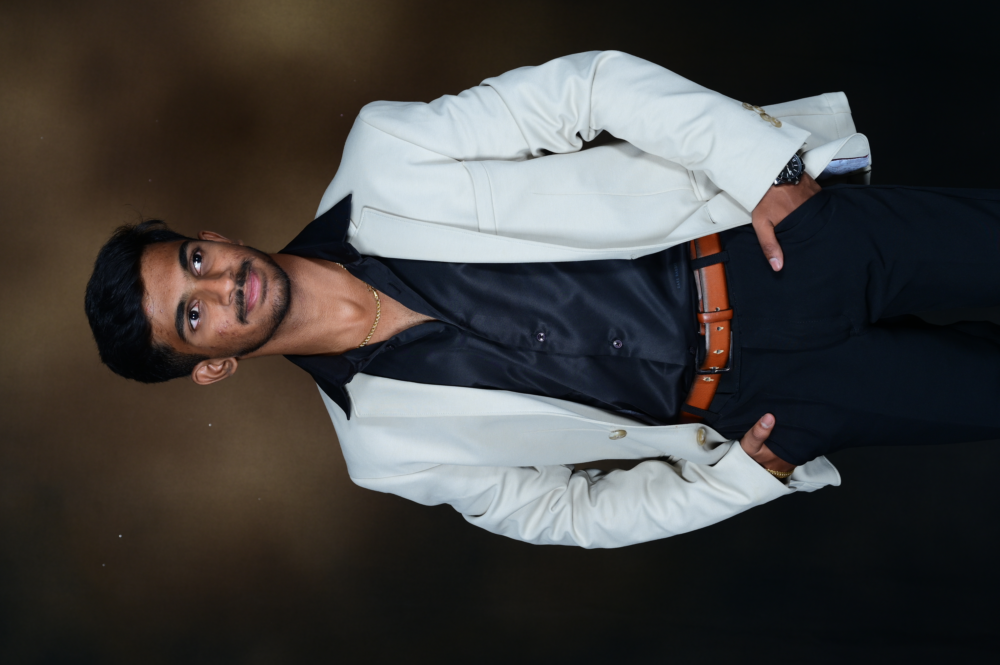

GET TO KNOW ME
I'm Nischal, an Engineering student from Bengaluru, India and a passionate Web Developer focused on creating modern, responsive and meaningful digital experiences.

WHO I AM
I'm a passionate web developer who enjoys turning ideas into clean, modern and interactive websites. I focus on creating experiences that are not only visually appealing but also simple and easy to use.
I'm constantly learning new technologies, improving my skills and exploring creative ways to build better digital products.
WHAT I DO
Building modern, responsive and high-performing websites.
Creating clean interfaces that are simple and enjoyable to use.
Turning creative ideas into meaningful digital experiences.
MY JOURNEY
Started exploring web development and learning how websites are built.
Learning HTML, CSS, JavaScript and building personal projects.
Building projects, exploring new technologies and improving every day.
LET'S CREATE SOMETHING
I'm always interested in new ideas, projects and opportunities.
Let's Work Together →